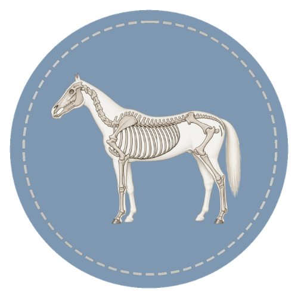

The horse's skeleton is the internal framework that supports the body, protects vital organs, and makes movement possible. Every stride depends on bones and joints working together in a coordinated system. This course introduces the major bones and joints of the horse and explains how the skeleton connects to movement, balance, and soundness. Each lesson builds from basic structure to practical understanding used in everyday horse care.

Course Curriculum
This course is organized into four core areas: the purpose and function of the equine skeleton, the axial and appendicular skeleton, major bones of the forelimb and hindlimb, and key joints and how they support movement. Each lesson builds on the one before it to develop clear anatomical understanding.
This course uses structured visual learning to connect anatomy with real-world use. Content is designed for steady progression through observation, repetition, and applied examples.
Ready to Start?
Lessons designed to build clear, confident understanding step by step. Learn to recognize, describe, and apply key concepts with real-world relevance.
Start the Course